Dessert Shop Rebrand
I carried familiar dessert ingredients into the brand’s packaging and characters, then tested two layouts to see which customers found clearer.
- Role
- Brand designer · Illustration · Characters
- Scope
- Identity · Packaging · Social · IP
- Tools
- Illustrator · Photoshop · Figma
- Type
- Brand work and portfolio reinterpretation
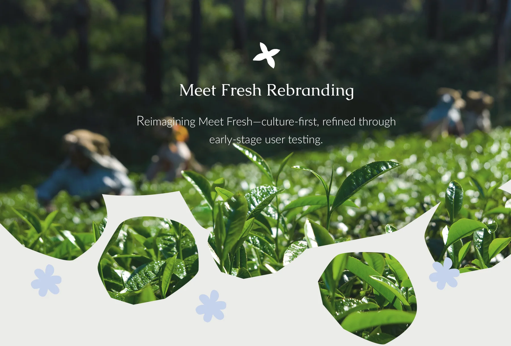
What is the dessert shop?
A Taiwanese dessert brand known for grass jelly, taro balls and tofu pudding.
As the brand expanded globally, its visual style became outdated and inconsistent.
This project reimagines its identity with a clear, warm and modern tone, keeping its roots in tradition.
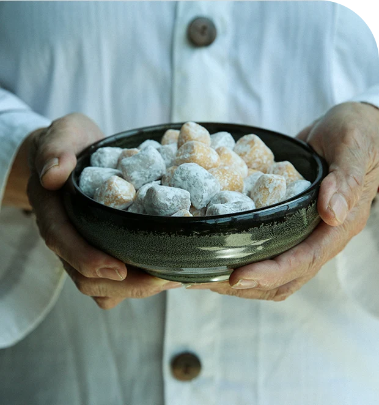
Ingredients, characters, colour
Each dessert ingredient is illustrated in a clean, flat style. This makes the visual system easy to use and instantly recognizable.
Ingredient illustrations provided by the brand’s Taiwan team.
- Grass Jelly Leaf
- Grass Jelly Flower
- Grass Jelly
- Taro Ball
(Sweet Potato) - Taro Ball
(Taro) - Mini Q
- Boba
- Rice Ball
- Tofu Pudding
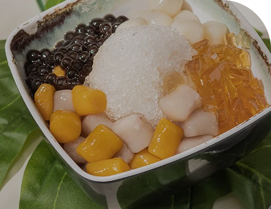
Character designI introduced friendly characters based on real dessert items. They bring emotion and warmth to the brand.
Character design by Joy Shih.
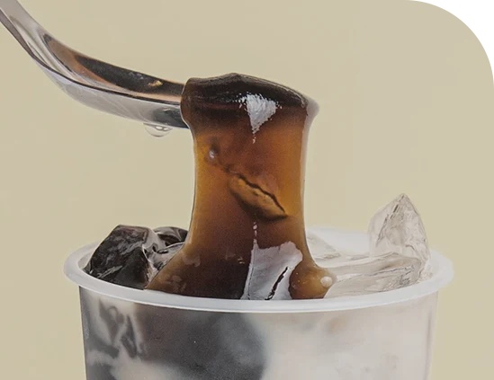
Colour & type systemTypography is both clear and characterful, matching the brand’s gentle tone.
From Farm to Table, in a Bowl.
Caudex blends a classical serif structure with a clean digital finish. It brings a sense of heritage and elegance.
- #509867
- #C4A1C9
- #F2B13F
- #F9F9F9
- #012B13
A four-step rollout
- Visual identity refreshLogo lock-ups, colour and type.
- Packaging & signage redesignCups, bags and in-store graphics.
- Customer touchpointsMenus, merch and seasonal moments.
- Social media systemTemplates that grow with the menu.
A modern take on tradition. Even a dessert can carry memory and care.
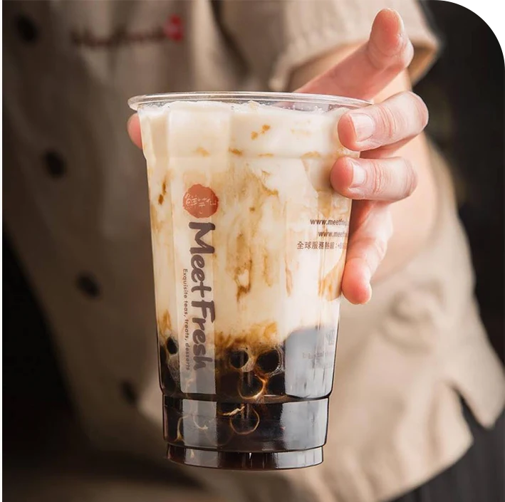
Ingredients that dance across the brand
Taro balls and grass jelly leaves dance across the brand’s canvas: a motion between tradition and imagination.
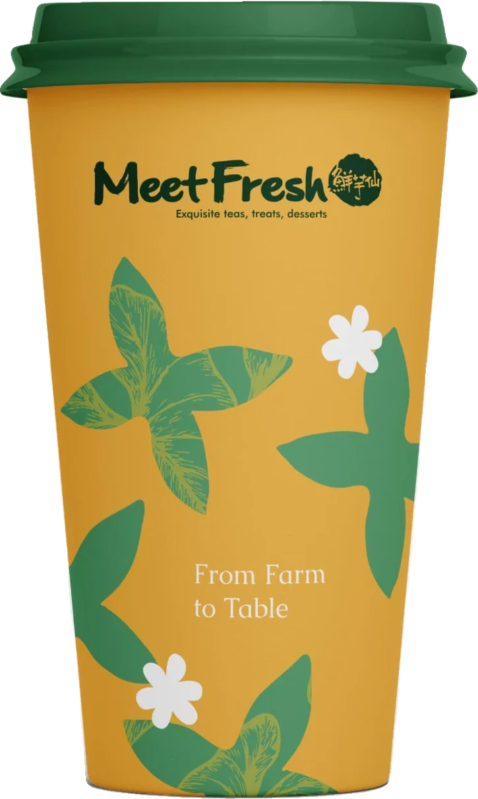
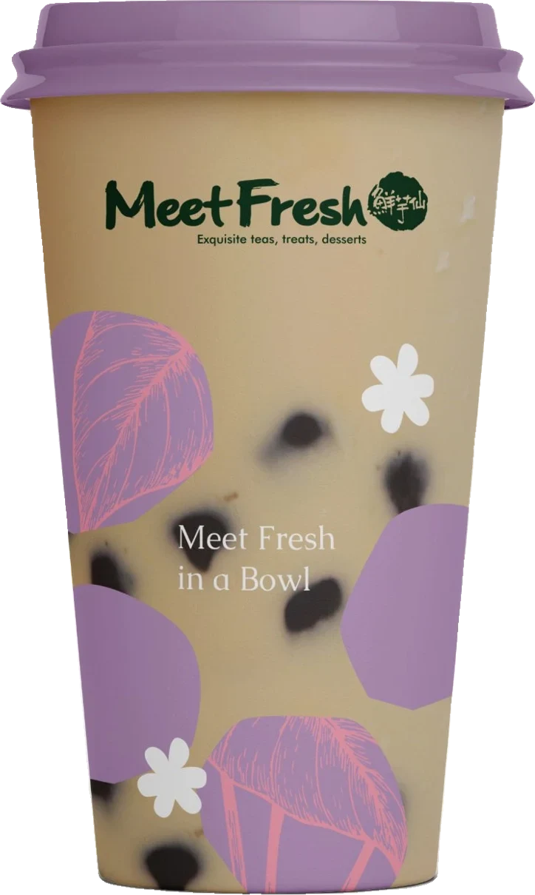
A feed that tastes like the brand
Social templates mix real ingredients with the illustration system, from “Behind the scenes” stories to weekly specials.
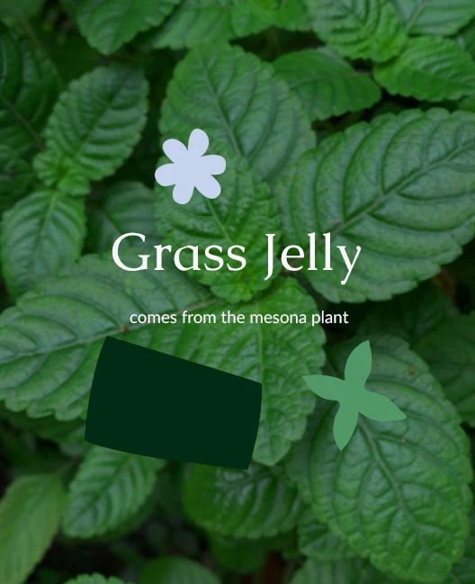
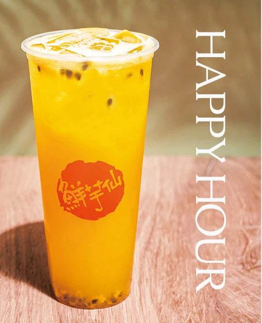
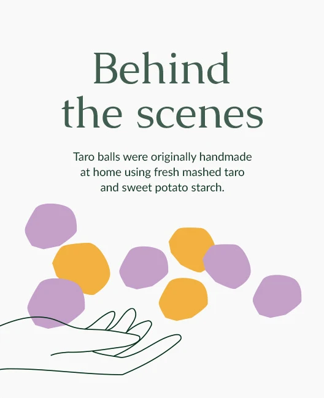
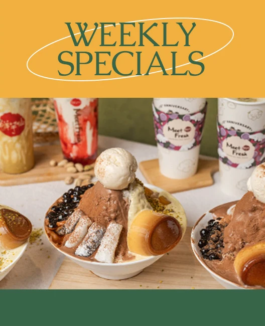
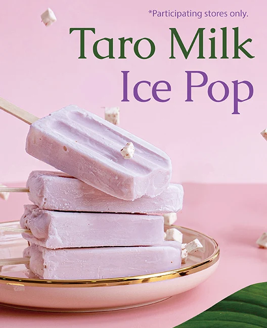
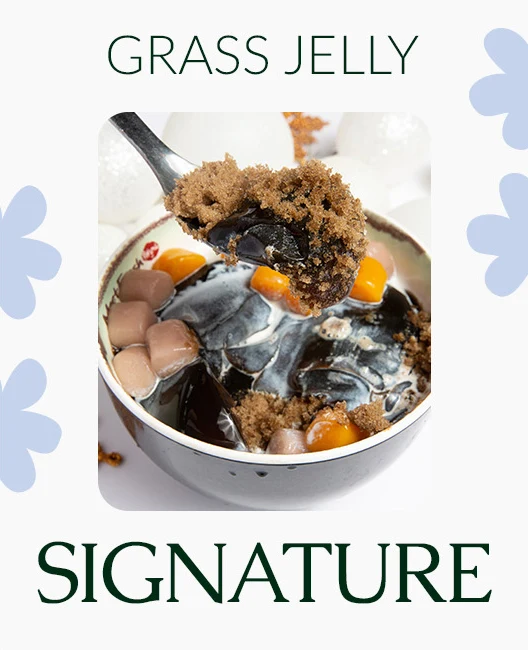
06Audience insightWhat 20 people told me
0%chose the clearer layoutTo better understand user preference, I ran an A/B visual test with 20 participants aged 25–45. 14 of 20 participants chose the clearer layout.
Insight: simpler layouts, infused with cultural cues and subtle charm, resonated more with young adult consumers.
+IP designTransforming sweetness into story
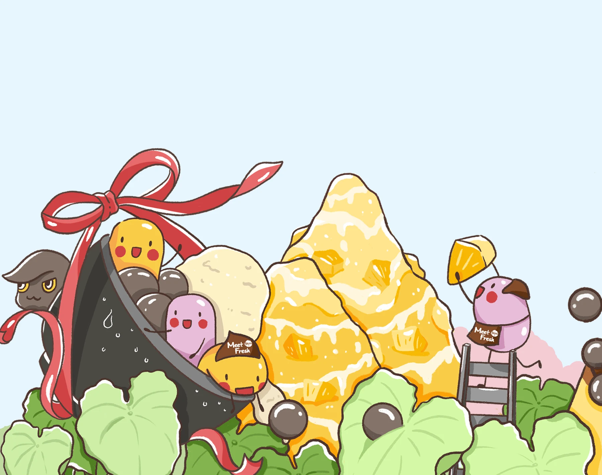
To add a touch of warmth to the brand, I introduced a set of friendly characters inspired by real dessert items, from taro balls to grass jelly.
Rather than becoming the face of the brand, these characters act as emotional amplifiers. Their charm lies in how they bring familiar desserts to life, especially across social content, packaging, seasonal campaigns and limited-edition merchandise.
01Character designA family of dessert friends
Each character was inspired by a dessert ingredient, translating taste and texture into visual personality. Simple shapes and playful expressions resonate across age groups and platforms.
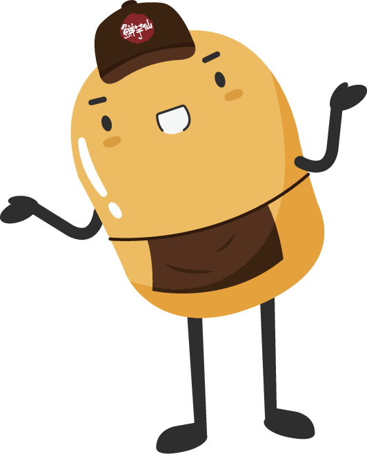
Tarobro- Mini Q
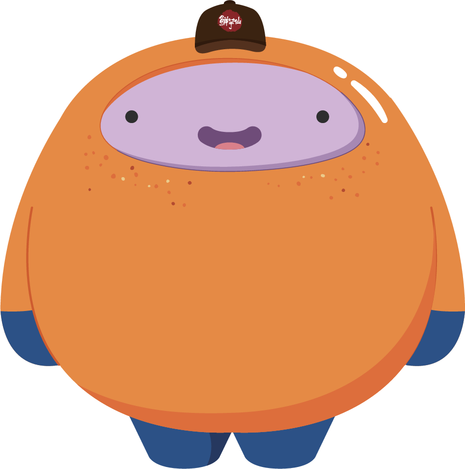
Uncle Po- Grace
Rice Ball- Bobo
02Physical applicationsDelight, without overpowering
The characters were applied to limited-time merchandise, packaging and point-of-sale materials, adding a touch of delight without overpowering the brand’s core aesthetic.
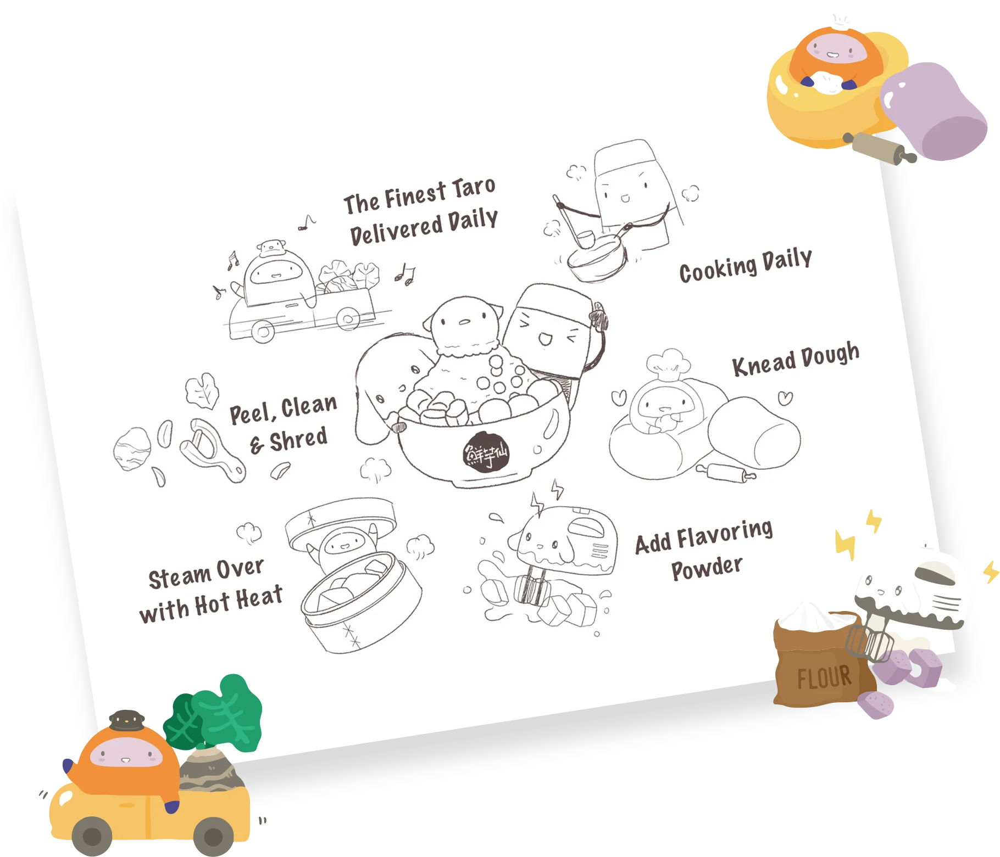
Over six years with the brand, I contributed to design, planning, and work that made its way into stores. The company adapted the direction to its commercial priorities. For this case study, I reworked selected elements to reflect my original intent and visual style while staying rooted in the brand’s culture.